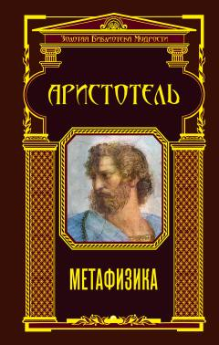

МAristotelning borliq va bilim asoslarini o'rganuvchi buyuk falsafiy asari.
Ushbu kitob qadimgi yunon faylasufi Aristotelning eng muhim asarlaridan biri bo'lib, ilk bor «birinchi falsafa» va borliqning asosiy sabablarini o'rganadi. Asar antik davr falsafiy tafakkurining oltin fondiga kirib, butun Yevropa ilm-faniga ulkan ta'sir ko'rsatgan. Mutolaa qiluvchilar uchun borliq va bilim haqidagi fundamental tushunchalarni ochib beradi.